물 위의 항연
AFI 공공의 순간 - 프로젝트 2_과정으로서의 공공미술(Public art as process)
2006. 0910 0930
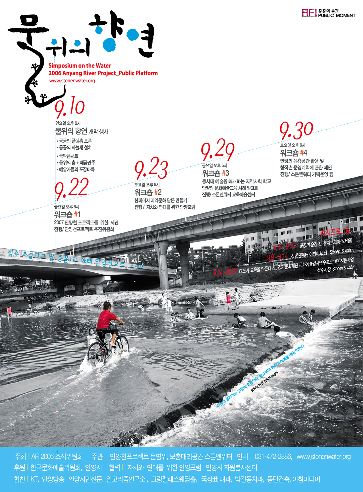
보충대리공간 스톤앤워터
경기도 안양시 만안구 석수2동 286-15번지 2층
stonenwater@hanmail.net
stonenwater.org
사단법인 비영리전시공간협의회 산하 AFI(Artist Forum International)조직위원회는 매년 새로운 주제로 행사를 기획, 진행하며 2006년에는 대안적인 공공미술의 정의와 새로운 방향을 살펴보고자 "공공의 순간(Public Moment)"이라는 주제로 행사를 진행하고 있습니다.
● "공공의 순간(Public Moment)"은 공공적 영역과 만나는 예술의 가장 현재적인 흐름을 보여주고자 기획되었습니다. 예술가들이 사회에 개입하는 다양한 지점들을 보여주는 이 전시는 예술과 공공성이 만나는 발화점들을 동시다발적으로 드러냄으로써 그 자체로 공공미술의 현재를 가늠해볼 수 있는 지형도가 될 것입니다. "순간(Moment)"이라는 표현에 함축되어 있듯이, 각각의 전시공간에는 '현재'에 일어나는 공공미술의 활동들과 그 속에서 소통되어지는 움직임의 순간들이 펼쳐집니다. 그 안에는 도시에 대한 문제 제기, 소외 계층을 위한 프로젝트, 제도적 시스템에 대한 비판, 지역 공동체와의 실천적 커뮤니케이션 등 개인과 사회, 예술의 긴밀한 역학관계 속에서 발생되는 예술가들의 다양한 활동이 집결되어 있습니다. 이를 통해서 공공미술의 정의와 역할에 대해 되묻고 가장 창의적인 정의를 떠올릴 수 있다면, 그 자체로 미래의 대안적 공공미술을 향한 출발이 될 수 있을 것입니다.
■ AFI 2006
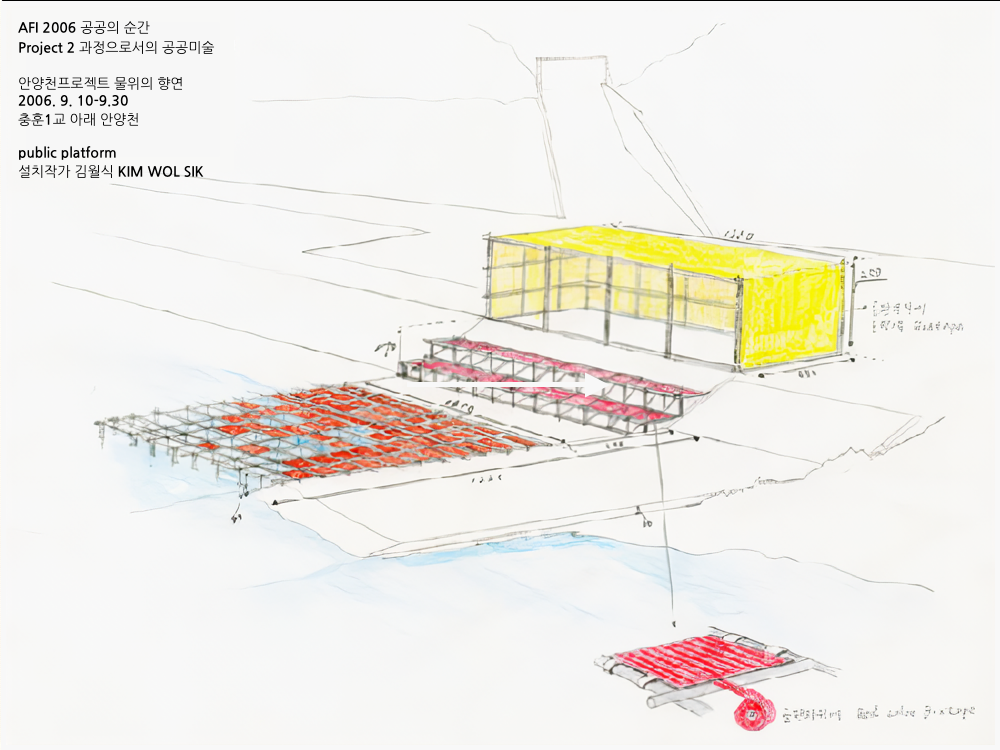
흐르는 물을 관망(觀望)하는 것은 시간의 흐름에 존재를 맡기는 것이다. 예술은 풍류(風流)와 함께하고 삶이 한 박자 쉬어가는 물위의 향연(饗宴)은 물 위에 멈추어 선 침묵과 명상의 공간이다. 굽이쳐 흐르는 물줄기는 다시 돌아오지 않는 한 순간에 불과하며, 직선이 차원(次元) 없는 점들로 이루어 진 것처럼, 시간은 지속(遲速)이 없는 순간들로 이루어진다. 물줄기의 흐름보다도 빠른 속도로 움직이는 강변의 자동차들과 그 위를 빼곡하게 채우고 있는 아파트 단지의 그림자가 수면위로 떨어지면, 나르시즘에 우쭐한 도시문명이 강물조차 무기력하게 한다. 투명한 물은 무엇이든 집어 삼킨다. 물의 표면은 물 자체가 아니다. 그것은 허상이며 반영이고 거울이다. 물의 이러한 정다운 환영은, 즐기는 상상력 또는 상상력의 인공적인 착각에 일반적으로 결부되어 있다. 이러한 즐거움을 따라 도시하천 공간을 해석하고 공동체가 더불어 쉴 수 있는 향연을 마련한다.
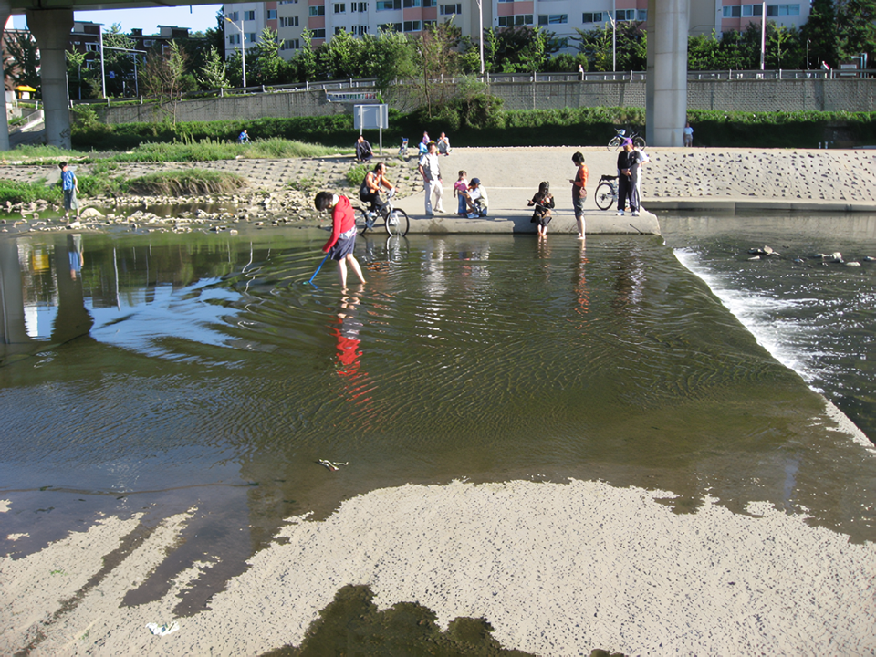 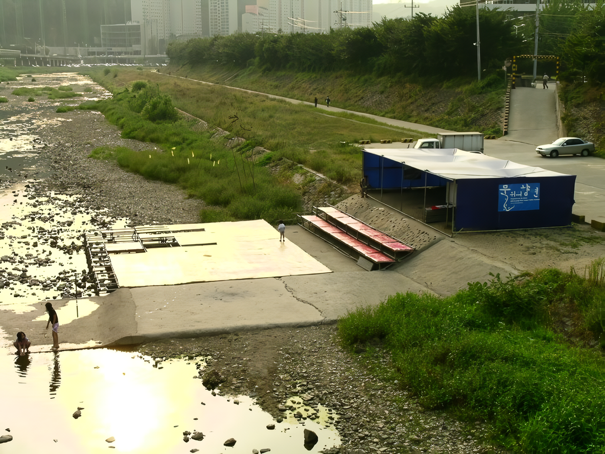 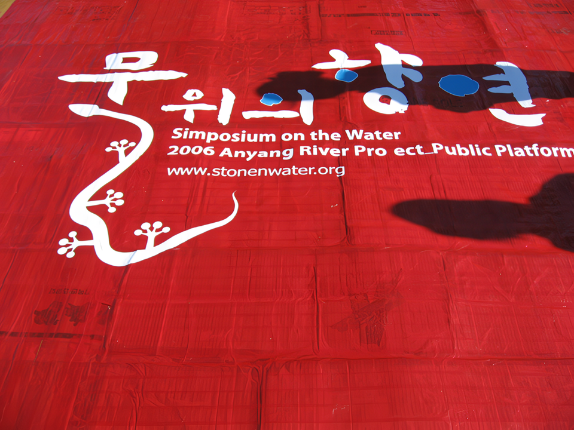 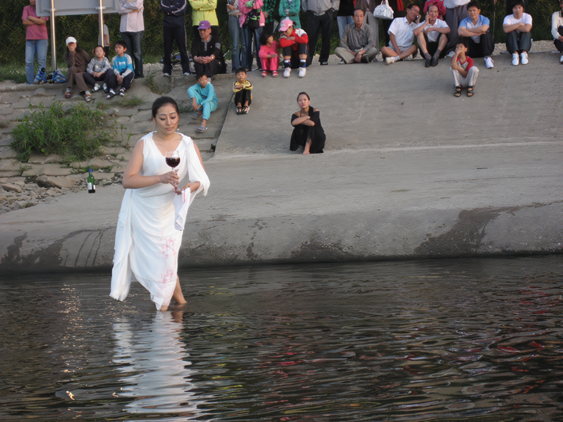 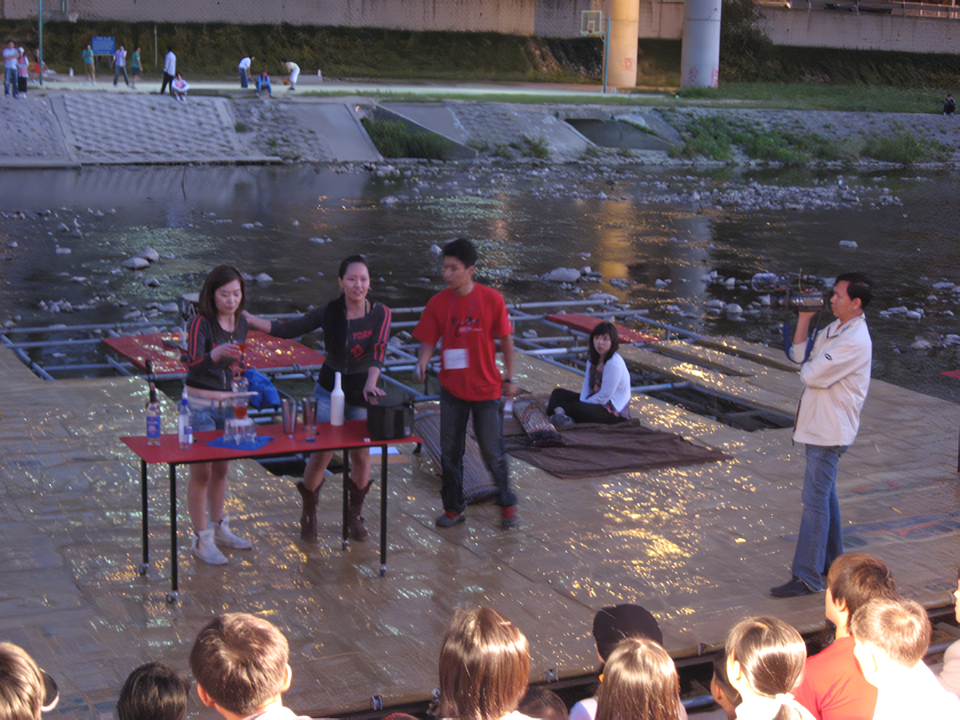 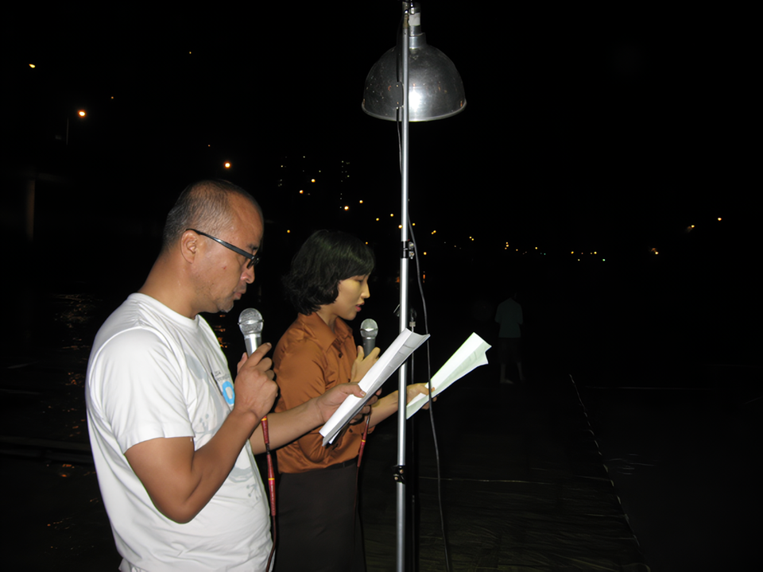 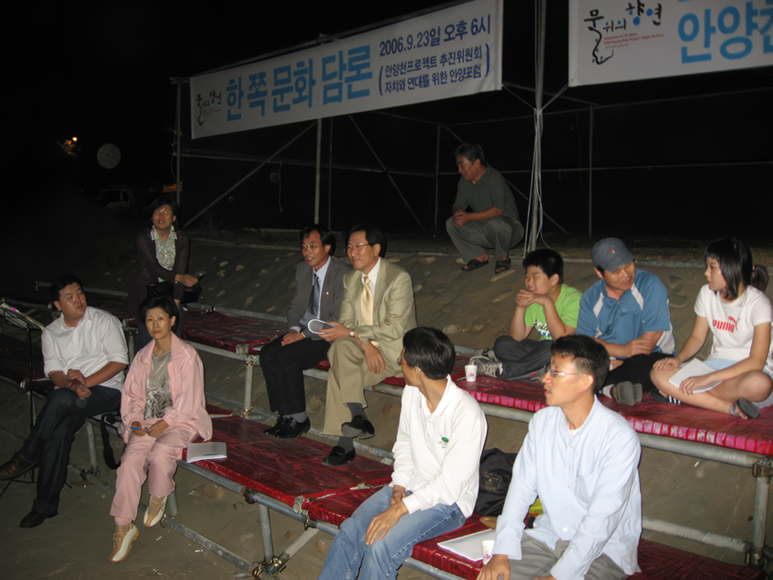
안양천 프로젝트를 진행할때만 해도 안양천은 많은 환경단체들에 의해서 감시되고 있었다. 그들은 28개 시민사회 단체와 연대하여 하천 오염 산업시설들을 고발하고 하천 생태계의 복원을 위한 지역사회의 관심을 주목시킬 수 있는 다양한 프로그램들을 개발하고 있었다. 당시 예술가들이 주목했던 부분은, 지역 하천 오염의 원인이 된 삼덕제지 공장에 대한 역사적 검토와, 지금은 공원으로 변화된 근대 산업시설들에 대한 수도권 인근의 위성도시 자치단체장들의 문화적 인식을 개선시킬만한 활동을 기획하는 일이었다. 환경운동은 정치적 슬로건과 프로파간다(propaganda)식의 선동으로 이루어 낼 수 없는 일이었다. 그것은 삶의 패러다임이 변화하는 것을 의미하고 총체적인 라이프스타일의 변화가 동반되는 문화적 행위들과 깊은 연관성을 가진다. 하지만, 대부분의 환경운동 단체들이 문화와 예술을 환경운동과 접목시킬 수 있는 방법에 대해 경험이 부족했고, 예술가들은 창작을 통해 환경문제 및 사회문제에 개입하는 데에 서툴렀다. 그나마 이와 같은 사회문제와 예술을 결합하고 예술의 사회적 경로를 확대하리라고 기대했던 공공미술은 지극히 실망스러웠다. 최근에 진행되고 있는 문화부의 아트인 씨티 사업, 서울시의 도시갤러리 사업을 비롯한 공공미술을 화두로 도시공간을 개선하고 있는 지방자치단체의 각종 프로젝트들은 예술을 철저히 물질화 시키는데에 기여하고 있다.
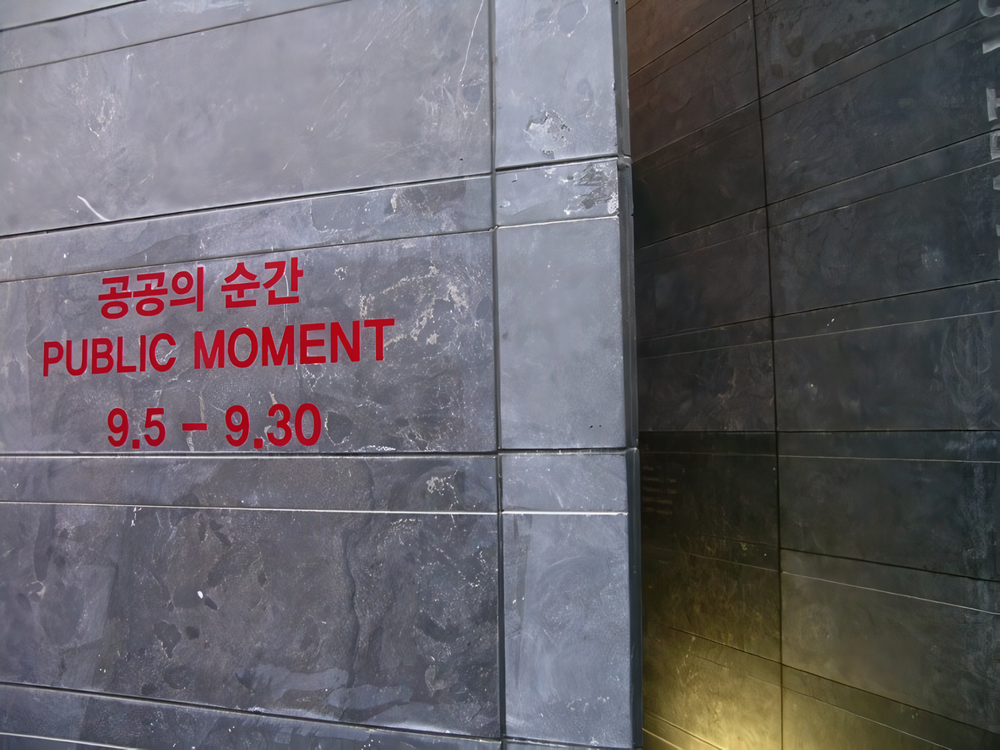 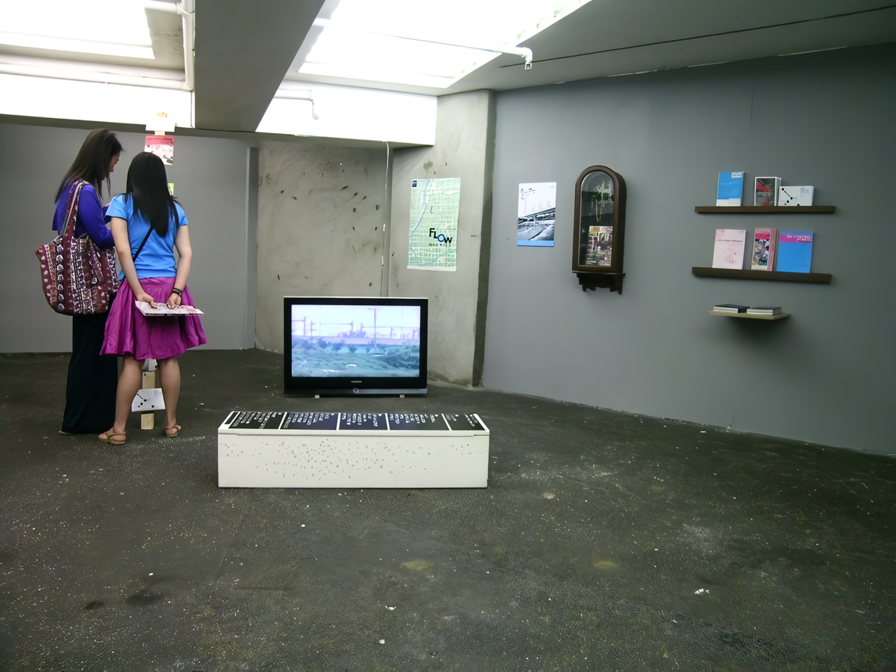 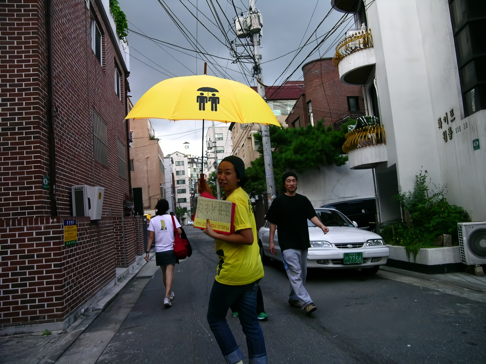 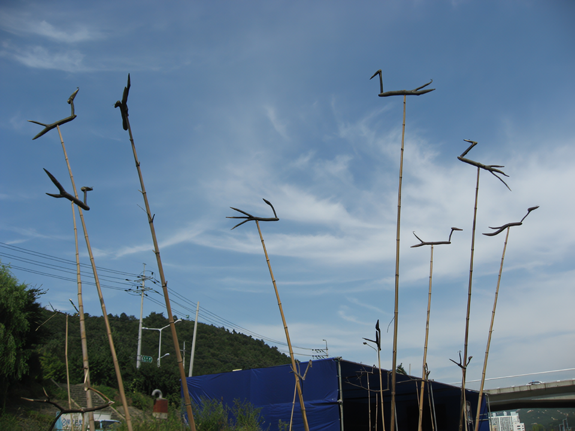
환경운동가들과 함께했던 안양천 프로젝트는 2006년 AFI(Artist Forum International) 안양지역행사로 ‘물위의 향연(饗宴)’이란 프로그램으로 다시 안양천에서 진행되었다. 이 행사는 환경의 관점에서만 바라보던 하천을 문화적이고 예술적 관점으로 옮겨 오기 위한 실험이었다. 무용수들은 하천을 거슬러 올라가며 물 위에서 춤을 추고, 시민들은 안양천을 노래하는 시와 한 페이지 문화담론을 낭독하며 지역문화의 부흥을 이야기 했다. 우리가 주목했던 것은 환경문제로 덧입혀진 하천이 아니라, 물질 그 자체로서 흐르는 강에 대한 것이었다. 물과 더불어 상상하고 풍부한 은유를 찾아내는 것의 토대는 우리가 강변을 따라 걷고 그 흐름대로 사유하는 것이었다. 그동안 안양에서 진행되었던 공공미술 활동들을 점검하고 새로운 방향을 모색하는 순간(moment)은 물 위의 플랫폼에서 진행되었다. 지역의 환경운동이 걸어온 길과 앞으로 가야할 길을 모색하는 시간을 마련하고 지역예술의 사회적 경로를 마련하기 위한 문화예술교육 활동, 예술가들의 예술매개활동을 어떻게 마련할 것인지 토론했다.
■ 백기영
< 프로그램 안내>
▲9월 10일 오후6시: 개막공연-물위의 향연
안양천 충훈1교 수상구조물에서 작은 축제가 열린다. 특히 음식예술가들이 선사하는 '상상외'의 요리들과 수상공연이 볼거리뿐 아니라 관객들의 오감을 즐겁게 할 예정이다.
▲9월 22일 오후6시: 워크샵1-2007 안양천프로젝트 제안설명회
문화기획자와 작가들이 다수 참여해 내년의 프로젝트를 제안하고 보완하는 자리다.
▲9월 23일 오후6시: 워크샵2-안양천 시민문화포럼(한 페이지 문화담론)
안양천프로젝트 운영위원회가 안양천 시민문화포럼을 제안한다. 이 포럼을 통해 안양천을 닮아 '흐르는 물처럼 유연하게' 문화적 담론과 사회적 실천을 한다는 구상이다.
▲9월 29일 오후6시: 워크샵3-안양의 유휴공간 활용 및 창적촌 운영 제안
그동안 안양이란 공간에서 사회적 화두로 떠올랐던 공공예술과 더불어 일시적으로 비는 공공시설을 문화공간으로 활용하는 방안에 대해 터놓고 말하는 워크숍이 진행된다.
▲9월 30일 오후6시: 워크샵4-동시대 예술을 매개하는 지역사회 학교
안양에서 이루어졌던 문화예술교육에 대한 사례발표회가 열린다.
< 문화예술교육 강사연수, 태도가 교육을 만든다 전시회 >
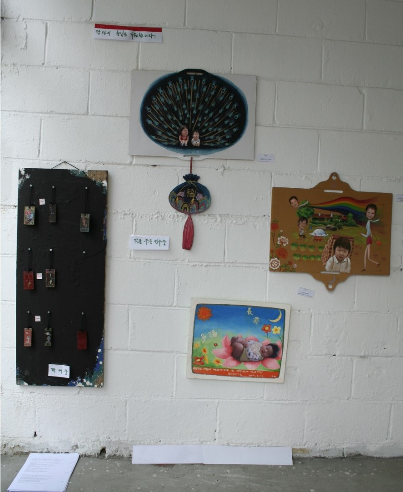 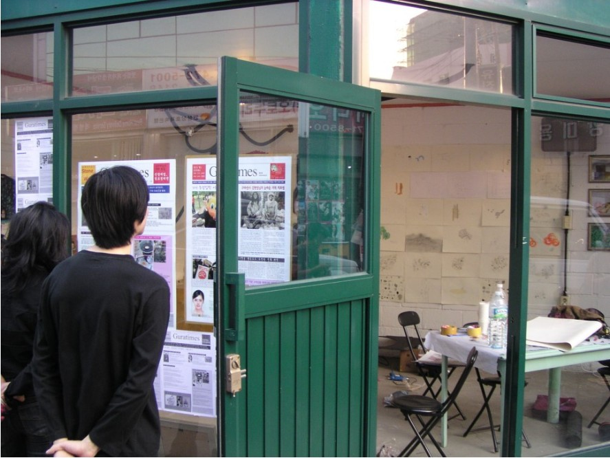 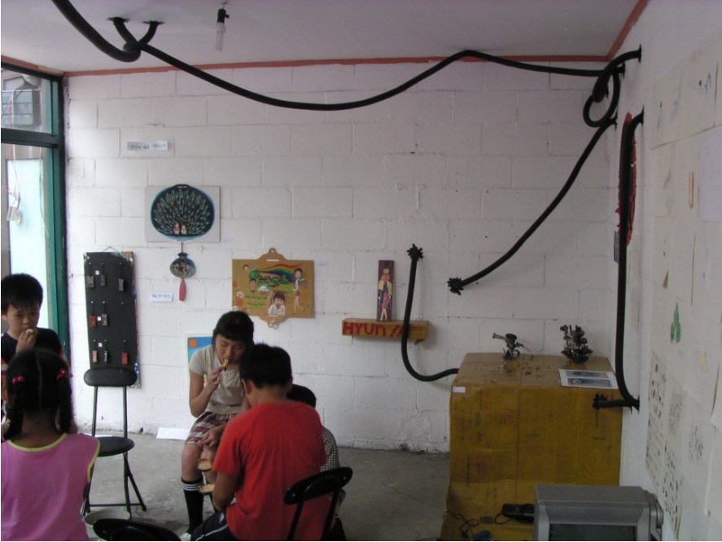 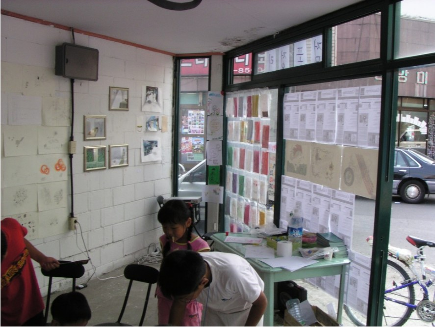 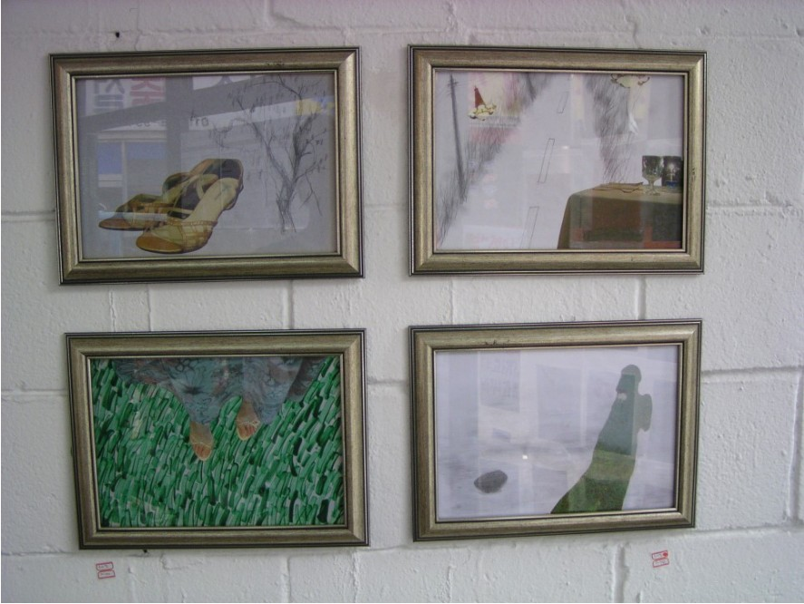 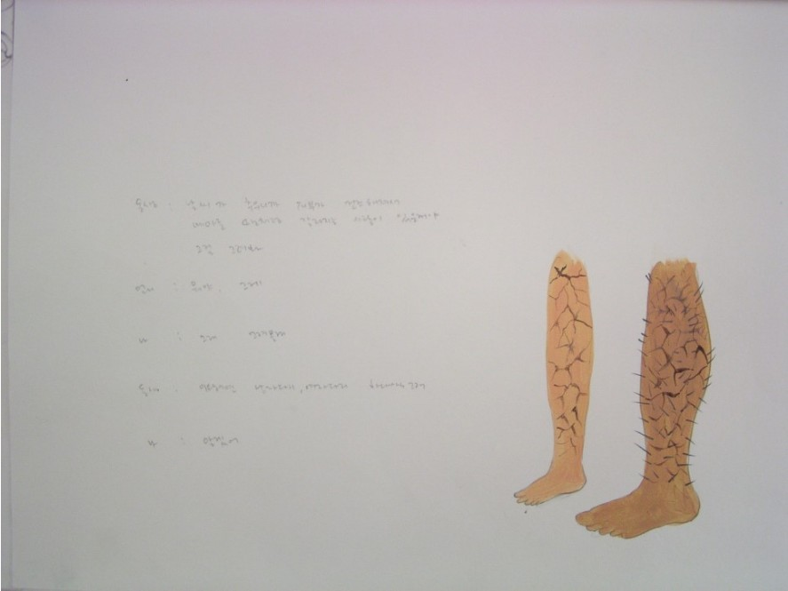 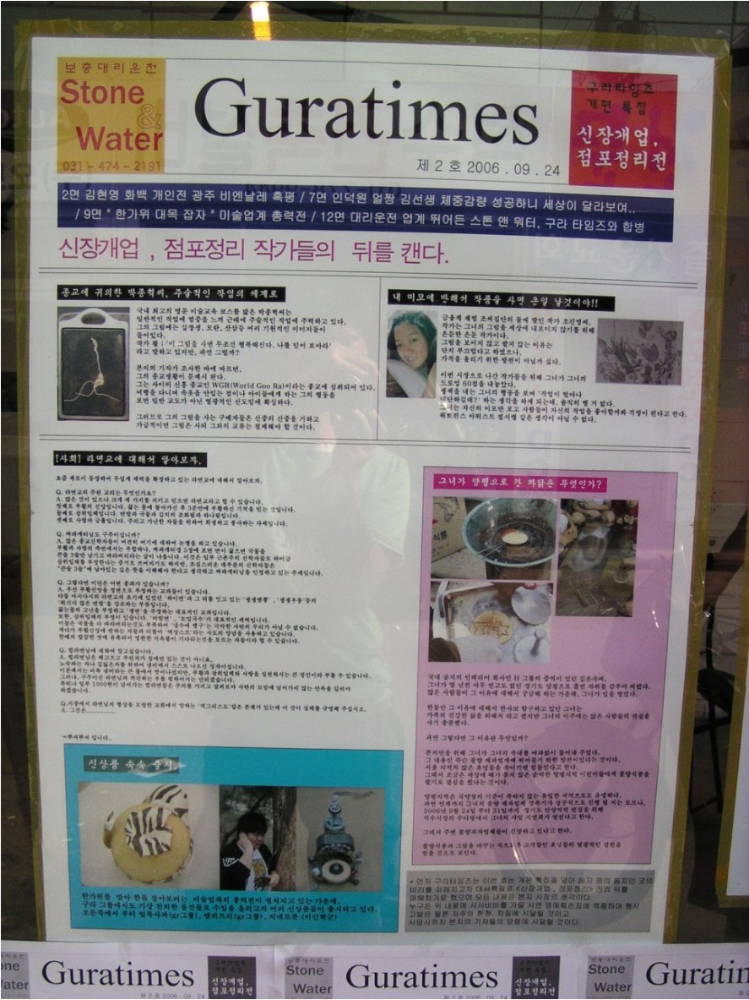 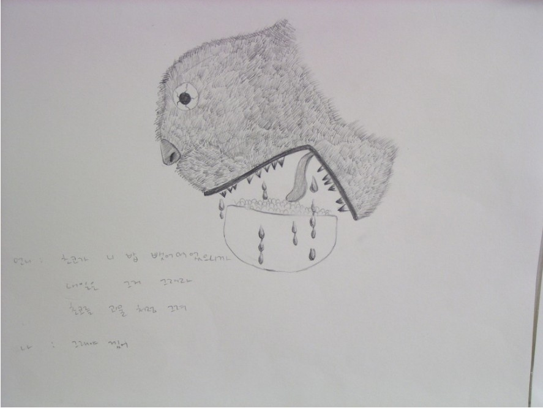 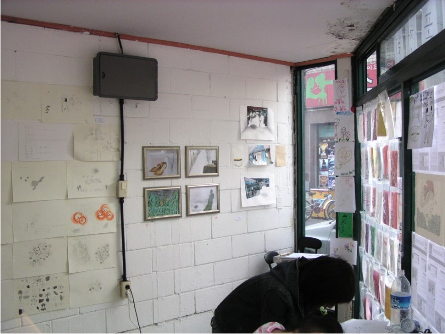 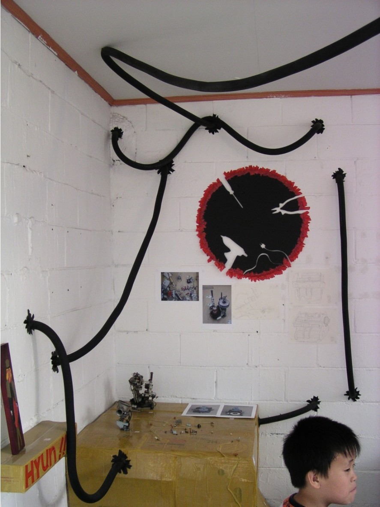
https://blog.naver.com/roughsurface/221634295771
위 블로그에서 사진을 갖고 왔다. 더 많은 사진과 설명은 위 블로그(옥상방수 쿨루프)에 접속하면 볼 수 있다.
옥상 방수가 필요하시면 쿨루프로 문의해 주세요.